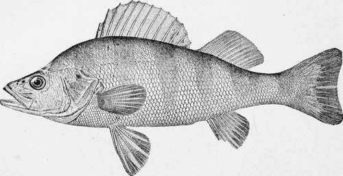

The Yellow Perch-Perca Flavesccns (Mitchill)
Description
This section is from the book "American Game Fishes", by W. A. Perry. Also available from Amazon: American Game Fishes: Their Habits, Habitat, and Peculiarities; How, When, and Where to Angle for Them.
The Yellow Perch-Perca Flavesccns (Mitchill)
Description
Body oblong, compressed, mouth moderate, the maxillary not quite reaching to orbit; lower jaw a little the longest; eye moderate, 4 1-2 to 5-in. head; top of head naked, the bones rough behind; cheeks with rather large scales, well imbricated; opercle naked and with radiating striae, of which the uppermost forms a long, flat spine, below which seven or eight striae end in sharp teeth; preopercle strongly serrate, the lower serrae hooked forward, gill-rakers comparatively short, in length about equal to the diameter of the pupil; pseudobranchiae very small; scales rather small, 55 to 62 in the lateral line; first dorsal spine inserted above base of pectorals; head 3 1-2 in. length, depth 3 3-4; fin-rays D. XIII I, 13; A. II, 8. Color dark-olive above; sides more or less brassy-yellow; belly white; about six irregular, dark olive bars on sides; lower fins clear, orange, sometimes red; second dorsal and caudal yellowish olive, somewhat dusky tinged; first dusky yellow at base, a black blotch on posterior part of the fin; lower jaw, etc., translucent reddish. The coloration varies much with circumstances, individuals living in weedy streams being much darker and more spotted than the average lake specimens are. Length of adult 8 to 12 inches.
The yellow Perch is a fish which has been on good terms with the angler ever since the first angle-worm was wet in American waters. He is generally ready to bite, always ready to be hooked when he has bitten, and may always be counted in as a notable part of the day's result when he is in the basket.
The Yellow Perch is found throughout the Great Lake Region, and in some parts of the Upper Mississippi. Its range extends thence eastward, including all the rivers of New England except the very coldest. Thence it extends southward in the lowland streams as far as Georgia. \Yhy Perch should be found in the rivers of the Carolinas, and not at all in the streams of Kentucky, Missouri and Southern Illinois, is one of the things which are hard to explain. Nor is this fact made any simpler when we remember that one other fish, and only one, the old-fashioned "Sunny," (Lcpomis fibbosus) shares this peculiar range with him.
The American Perch is a handsome fish in color. His back is green, his belly, and across his sides are four or five broad black bands. There is a big black spot on the spinous dorsal fin, while the lower fins are bright orange or even cherry red. From the black stripes the fish has received the names of Ringed Perch and Raccoon Perch. The name Yellow Perch is more commonly heard, and this appropriate title was long ago put into Latin by Professor Mitchill to form his scientific name, Perca flavesccns, the Yellow Perch.
Perca fluviatilis, the River Perch, is almost the duplicate of our species, and it is as common in the waters of Europe as is ours in the rivers of the Eastern States. The American species, flavescens, is the handsomer fish, however, with his coat of cloud and sunshine, while the duller olive and gray of the European fish suits the hazy sky of an English summer.
The Perch abounds in quiet, deep places in the river and in ponds and lakes. It feeds mainly upon minnows and worms, having a constant though not voracious appetite. It reaches a length of about eighteen inches and a weight of a pound or two. As a food fish it is respectable, though falling far short of the best.
I once spoke rather lightly of the Perch as food, and was taken sharply to task by a New York angler devoted to the Perch. I sent immediately to the market, bought some Perch and had them properly fried, but I found them even poorer and drier than I had thought. But these were market Perch, tired, and crushed beneath a mass of ice. The flavor is said to be best during the spawning season, after which, according to Dr. Goode, the flesh is soft and watery. Taken at its best, the Perch is a good pan-fish-and every fish has the right to be taken at its best.
The best bait for a Perch, so far as my experience goes- and I hasten to say that it does not go very far--is an angleworm. This, with a stout hook, a float and a sinker, serves the essential purpose, and a rod of alder does as well as the finest bamboo. According to Dr. Goode, this form of tackle is effective when Perch are numerous and hungry, and thus I have generally found them.
Thoreau says of the Perch:
"The common Perch, Perca flavescens, which name describes well the gleaming, golden reflections of its scales, as it is drawn out of the water, its red gills standing out in vain in the thin element, is one of the handsomest of our fishes, and at such a moment as this reminds us of the fish in the picture which wished to be restored to its native element until it had grown larger.
"The Perch is a tough, and heedless fish, biting from impulse, without nibbling, and from impulse refraining to bite, and sculling indifferently past. It is a true fish, such as the angler loves to put into his basket or hang on the top of his willow twig, on shady afternoons, along the banks of the streams. So many unquestionable fish he counts, and so many shiners which he counts, and then throws away."
I have spent a good many hours in the company of the Perch, but my most successful day at Perch-fishing was in June of 1874, on the Little Suamico River, in North-eastern Wisconsin.
I had gone up there on a hunting and fishing trip and had taken with me a bright young student, a Scotch boy from a Wisconsin farm, afterward well-known to naturalists as Charles Leslie McKay, and who later was lost on the shores of Alaska, while in the service of the Smithsonian Institution.
Two years before, the fires had raged through the pine woods of Oconto County, burning the trees and carving great ponds in the dried muck. The dark trunks rose like skeletons of the living things they had been, but the bird-life was as full among them as ever, and all about us the white-throated sparrow whistled and the rose-breasted grosbeak kept up his querulous questionings. The yellow-breasted chat made the bare condition of the trees a subject for his best jokes, and we found one compensating advantage amid the dismal scenery in the fact that we could hear the birds so well. But we came this time for fish, not birds, and all I need say is, that Perch, near the mouth of the little river, were as plenty as the shiners, and of the shiners we caught more than we cared to count or keep, or even to throw away.
Continue to: